Teaser

Abstract
Scene understanding and reasoning has been a fundamental problem in 3D computer vision, requiring models to identify objects, their properties, and spatial or comparative relationships among the objects. Existing approaches enable this by creating scene graphs using multiple inputs such as 2D images, depth maps, object labels, and annotated relationships from specific reference view. However, these methods often struggle with generalization and produce inaccurate spatial relationships like "left/right", which become inconsistent across different viewpoints. To address these limitations, we propose Viewpoint-Invariant ZerO-shot scene graph generation for 3D scene Reasoning (VIZOR). VIZOR is a training-free, end-to-end framework that constructs dense, viewpoint-invariant 3D scene graphs directly from raw 3D scenes. The generated scene graph is unambiguous, as spatial relationships are defined relative to each object’s front-facing direction, making them consistent regardless of the reference view. Furthermore, it infers open-vocabulary relationships that describe spatial and proximity relationships among scene objects without requiring annotated training data. We conduct extensive quantitative and qualitative evaluations to assess the effectiveness of VIZOR on scene graph generation and downstream tasks, such as query-based object grounding. VIZOR outperforms state-of-the-art methods, showing clear improvements in scene graph generation and achieving 22% and 4.81% gains in zero-shot grounding accuracy on the Replica and Nr3D datasets, respectively.
Paper PDF

Method / Architecture

Results
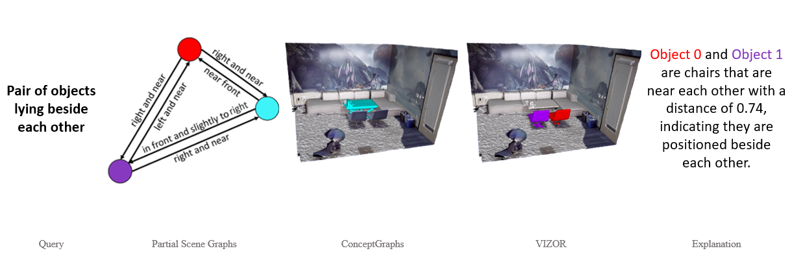
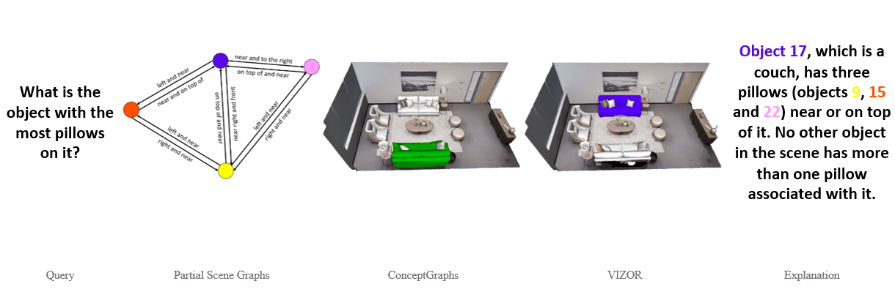
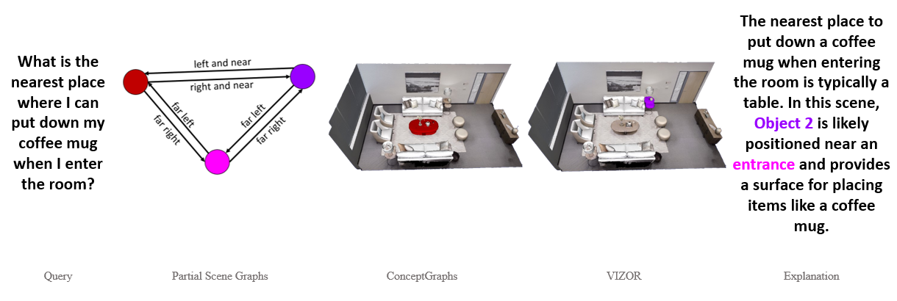
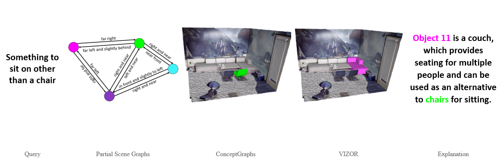
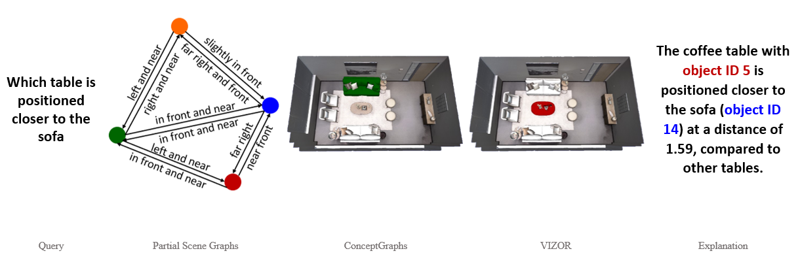
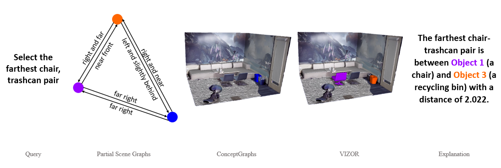
 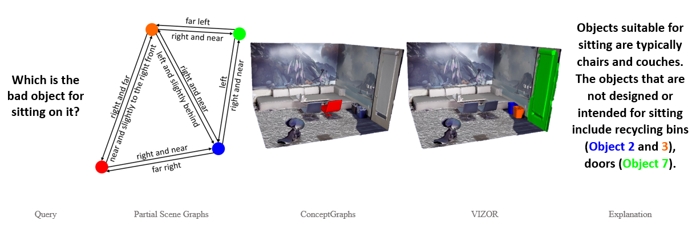
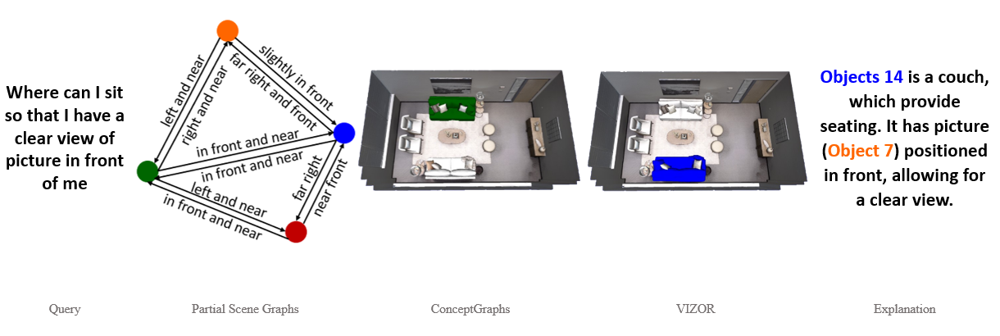
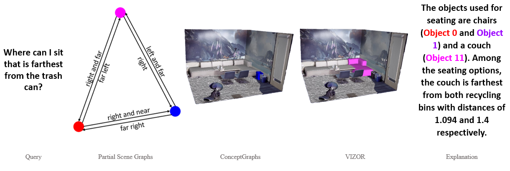
❮
❯
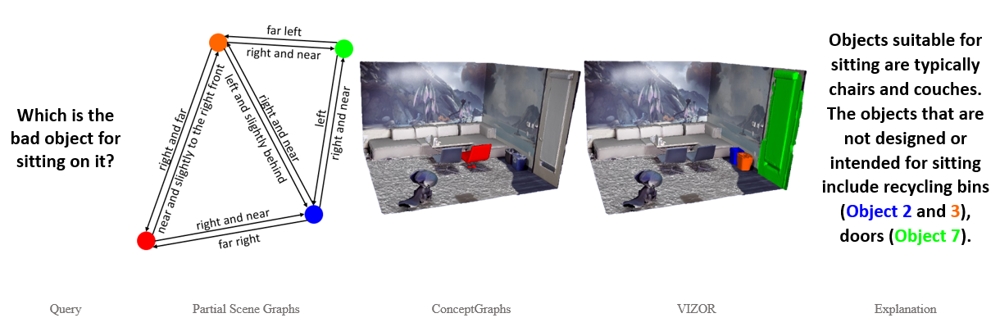
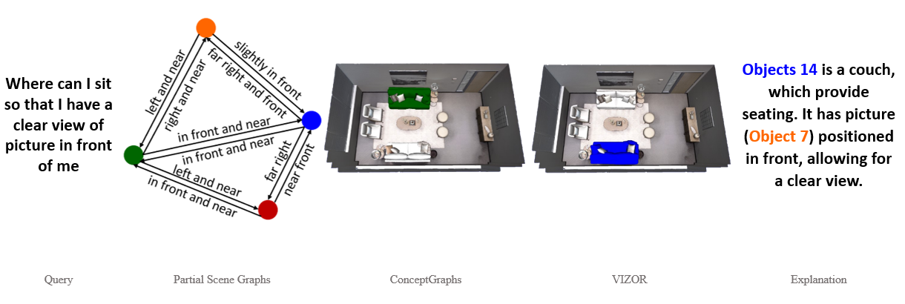
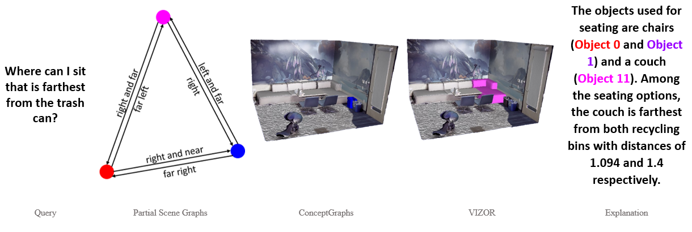
❮
❯
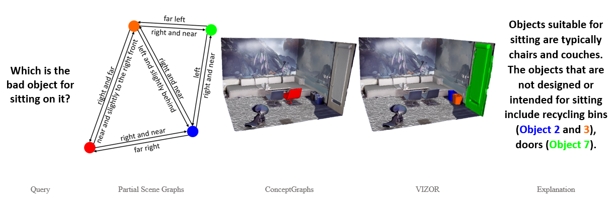
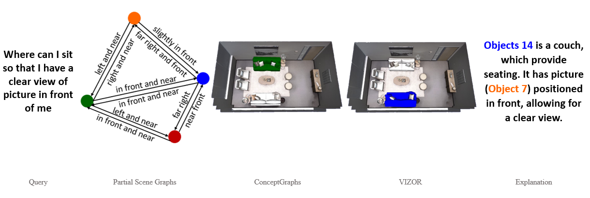
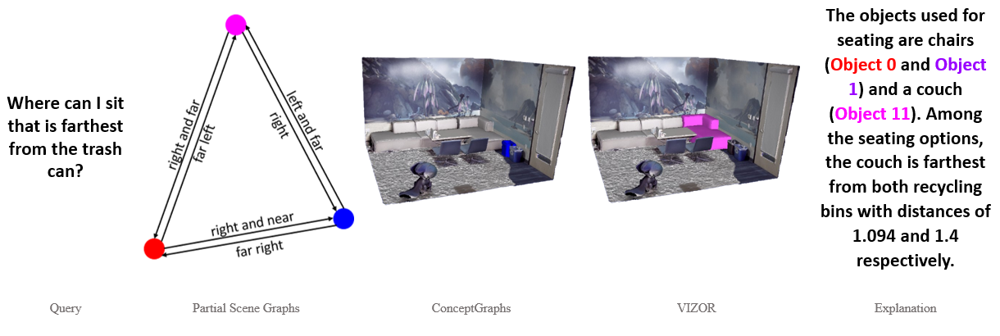
❮
❯
BibTeX
@inproceedings{yourkey2025,
title = {Your Paper Title},
author = {Your Name and Others},
booktitle = {CVPR},
year = {2025}
}